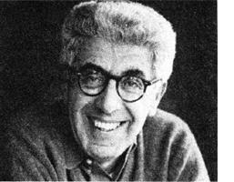
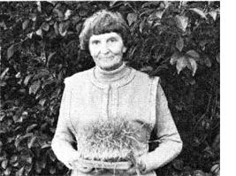
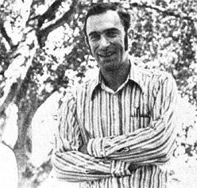

Selected doin's of well-known MOTHER-types from around the world.
Environmentalist Barry Commoner (author of The Closing Circle, Science and Survival, and The Poverty of Power) is currently directing his considerable efforts squarely at President Carter's energy plan, which he intensely opposes.
Since April, when the proposal was announced, Dr. Commoner has been conducting a careful numerical analysis of what the President's energy policies will actually do, based upon the data provided in the plan itself. And he has confirmed his belief that the new policies will only further push the country in the direction it's already going: toward centralized power stations and away from energy decentralization . . . toward service to industry and away from benefit to the individual consumer.
"The worst deception," the Missouribased scientist says, "is that most people think Carter's against the nuclear breeder. Actually, he's for an alternative breeder . . . one that makes nuclear power a renewable energy source. Carter's plan represents a commitment to the breeder route, and will actually block the progress of solar energy use.
"We're at a crossroads," Dr. Commoner adds. "We must choose between solar and nuclear energy . . . and Carter has chosen nuclear. But people are starting to recognize the dangers of his stand. I think we're at the beginning of a real popular movement, spearheaded by at least eight major anti-nuclear groups around the country."
If you'd like to know more about Barry Commoner's work, send a small donation to the Scientists' Institute for Public Information, 355 Lexington Ave., New York, N.Y. 10017, which has pamphlets on the subject.
"Seeds are the solution for survival. The stores can close and everything can disappear, but you can still live on sprouts and greens."
So says raw food vegetarian Dr. Ann Wigmore, and so she has said for the past 25 years. Only-now-more than a few people are starting to listen! Dr. Ann (as her followers affectionately call her), dark-haired and brighteyed at 68, is founder and director of the Hippocrates Health Institute in Boston, where she teaches visitors from all over the world a wholistic physical/spiritual way of life. Her many publications-Be Your Own Doctor and Why Suffer? are two examples-have found a wide readership.
The Hippocrates Health Institute is a division of Rising Sun Christianity, a non-profit, nonsectarian organization formed by the doctor in the early 60's. Her motivation was simple: "Many groups are doing wonderful spiritual work now, but they're neglecting the physical. I wanted to teach people the importance of taking care of the body."
For Dr. Ann, proper body care means a diet of uncooked foods, with special emphasis on wheat and fresh wheatgrass. And increasing numbers of people -including many doctors, nurses, and others interested in alternative medicine-are visiting the Institute, at 25 Exeter St., Boston, Mass. 02116, for training in her methods.
Dr. Ann was born into conditions of extreme hardship in Lithuania and reared by her grandmother, a natural healer who imparted to the little girl many of the concepts Ms. Wigmore now teaches. Only after immigrating to America, marrying, and raising her own child did Ann, in middle age, receive her calling.
"One day I was reading the Bible when an idea came to me with tremendous force: 'Become a minister and build temples'. It took me more than a year to realize what that meant. To 'build temples' was to rebuild bodies! When I discovered that meaning, I began training to become a minister."
Small centers based on the Institute are now springing up in other parts of the country. "The beauty of the whole program," says Dr. Ann, "is that you can do it in cities, you can do it without education, and you can do it very inexpensively. I, personally, lived for one whole summer on 25 cents a day . . . and never felt so good in my life! "
How did Paul Ehrlich spend his summer? Working with his wife Anne and physicist John Holdren at the Rocky Mountain Biological Laboratory, near Crested Butte, Colorado. The three were studying the ways in which plants naturally defend themselves against insects, in the hope that through their research -as Paul says-"more people will see that it's possible to grow crops without dousing them with pesticides".
By the time you read this, a hefty new Ehrlich, Ehrlich, and Holdren tome, Ecoscience: Population, Resources, Environment (an outgrowth of and expansion upon Paul's and Anne's earlier Population, Resources, Environment) will be in print. And only about three months ago Paul and psychologist S. Shirley Feldman released The Race Bomb, a review of the history of scientific racism (or more specifically, in Paul's words, "a demolition of the view that Blacks are inherently inferior to Whites").
Paul's now back at his usual work as Professor of Biological Sciences and Bing Professor in Population Studies at Stanford University, but his teaching schedule never keeps him from his fieldwork, his prolific writing, and his participation in numerous scientific societies.
In the time since his somewhat gloomy Plowboy Interview in MOTHER NO. 28, Paul's apprehension about the course of humanity has only deepened.
"The decent weather we've had in the past year has made us complacent about worldwide food shortages and the threat of famine," he says. "We still need to lower the birth rate! Every bit that we can shave off our population size means we'll be able to make that much less use of undesirable energy options. People are relaxing at a time when they shouldn't be."
Are you up on the latest doings of someone (such ax any of the innovative Pioneers featured in MOTHERS Plowboy Interviews) who's achieved recognition in a field regularly covered by this magazine? If so, send us a tightly written 200word report on that person (along with a snappy hark-andwhite photograph/, and-providing your report ix axed in NEWS WORTHIES--we'll gladly send you a flat $50 /$25 without the photo/. .Send contributions to NEWSWORTHIES Editor, THE Mother Earth News P.O. Box 70, Hendersonville, N.C. 28739.
|
PHOTO BY ROGER HAILE |
 STAFF PHOTO |
 PHOTO BY ILKA HARTMANN |
|
 |
|
|